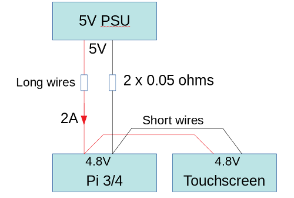

Using the Raspberry Pi official 7-inch touch-screen in embedded applications
 The 'official' Raspberry Pi 7" touchscreen is a solid piece of equipment.
Although it's more expensive than many of the 3rd-party touchscreens,
it has its own interface on the Pi board (doesn't use HDMI),
and can be controlled
entirely by software. It isn't a generic HDMI panel branded as a
Pi accessory.
The 'official' Raspberry Pi 7" touchscreen is a solid piece of equipment.
Although it's more expensive than many of the 3rd-party touchscreens,
it has its own interface on the Pi board (doesn't use HDMI),
and can be controlled
entirely by software. It isn't a generic HDMI panel branded as a
Pi accessory.
Unfortunately, like everything else in the Raspberry Pi world, there is a lamentable dearth of technical information. If you're plugging it into a desktop-style system running an official (Raspbian, NOOBS) Linux, then it will 'just work'. If you're embedding the touchscreen in a piece of equipment you're building yourself, you're on your own.
This article attempts to provide at least some of the missing technical information.
What follows applies to the Pi 3B+, which is the latest release before the Pi 4. I have no reason to think it won't work with Pi 4 units, but I haven't tried. I'm assuming you're using an official Raspberry Pi kernel, even if you aren't running an official Linux distribution.
Wiring and assembly
The official touchscreen connects to the proprietary 'DPI' display port on the Pi, not to the HDMI port. It's not well-documented which way around to plug in the display port ribbon cable but, if you mount the Pi on the back of the display, the cable will will only work one way around -- to plug it in the "wrong" way would put a twist in the cable, and it isn't long enough for that.
So, in brief, imagine the Pi mounted on the back of the touchscreen -- whether you plan to mount it like that or not -- and the orientation of the ribbon cable will be clear: it should be untwisted.
The touchscreen uses a single 5V power supply, and you should plan on it drawing at least one amp -- more on this specific point later. The 5V connections are on a 4-way header on the touchscreen control board, and are clearly marked.
The board also has an i2c interface but, so far as I can tell, it isn't needed for any recent Raspberry Pi Linux kernel, and I've never connected it.
Physical mounting
The touchscreen is not well-designed for mounting on a panel. It has bolt-holes on the back for 3mm bolts, but they are elevated from the body of the touchscreen itself by about 4mm. The bolt holes have to be elevated, because otherwise even a short bolt would screw into the fragile glass of the display hardware.
What this means is that, if you try to mount the touchscreen on the front panel of a piece of eqipment, there will be a 4mm gap between the back of the touchscreen, and the front of the panel. I guess you could fashion some sort of gasket to close the gap, but the already-thick touchscreen bezel would protrude even further from the front panel. It's hard to demonstrate this problem withou close-up photographs but, in short, if you want to mount the touchscreen on a panel, you should bargain for quite a few hours of fiddling and construction to make a neat job of it.
Current consumption
The current consumption of the touchscreen seems to cause a lot of problems for users, particular for builders of custom equipment. There's a lot of discussion on various forums about how "big" a power supply to use. I see a lot of complaints of the form "I bought a 3A PSU and I still see the under-voltage warning flashing".
In fact, the current rating of the power supply is not, in itself, the relevant factor here. Rather, it's the length and gauge of the wiring, as illustrated in the diagram below.

A typical configuration has the Pi, the screen, and probably other equipment, all connected together using perfectly satisfactory, short wiring in a piece of equipment. The whole piece of equipment is separated from the PSU by, say, two metres of cable.
Consider a situation where the cable has a resistance of 0.05 ohms in each of the positive and negative legs. That's a total resistance in the supply path of 0.1 ohms. If the Pi and the screen between them draw 2 amps -- which is perfectly plausible -- then the voltage drop along the supply cables is 0.2V. If we start with a 5V supply, then the voltage on the Pi ends up at 4.8V. This is getting close to the point where an under-voltage will be signalled. If there are spikes in current consumption, either in the display or the Pi, or anything else it is connected to, the voltage drop could be enough to cause problems.
It doesn't take much to have a total supply path resistance that adds up to 0.1 ohms or so. If you have a plug-and-socket and a switch in the equipment, and perhaps a length of PCB track, then you'll struggle to get the resistance lower than this figure. What's particularly irritating is that 0.1 ohms is too low to measure with a typical toolbox multimeter. In fact, if you measure the resistance from the positive terminal of the PSU, to the positive terminal on the Pi's 5V GPIO pin, if you can measure anything at all with a toolbox multimeter, the the resistance is too high.
For the sake of completeness I should point out that two metres of 1 mm2 copper cable -- that's the kind that might be used for low-power mains lighting circuits, rather for about 15 amps -- has about 0.05 ohms of resistance in each conductor.
What all this means is that you need a PSU that's rated for at least 2.5 amps but, more importantly, the cable from the PSU needs to be as short as possible, and you need to be very careful to minimise the resistance of anything else (switches, connectors) in the power supply path.
Drivers and software
With modern Linux kernels, the official touchscreen does
not need any additional kernel modules to be able to provide
a picture -- all the relevant software support is loaded by
the boot firmware. Thre are many settings that can be
configured in the config.txt file in the
boot partition -- these are listed in the
official documentation.
Of particular interest to equipment builders is the setting
lcd_rotate, which inverts the entire display.
The LCD panel does have a preferred viewing angle (this, at least,
is in the official documentation), so the panel should
be mounted -- so far as possible -- to be viewed from the
right direction. This might mean mounting it "upside down",
and inverting the display in software. So far as I know, this inversion
does not require any additional CPU resource.
To get touch input from the touchscreen, you will need a kernel
module -- the standard rpi-ft5406 module reads touch
data and translates it into conventional mouse data, which can
be read from /dev/input/mouseN or /dev/input/mice.
If you're using the touchscreen with X, then there should be no additional
work to do, as the data is already in the right place. If you're cooking
up your own interface, the mouse protocol is well-documented.
The rpi-ft5406 module does not handle the backlight -- this is
the job of the rpi_backlight module. This enables the
sysfs directory /sys/class/backlight/rpi_backlight
and, in particular, the two pseudo-files brightness
and bl_power.
brightness takes a number between 0 and 255 as ASCII
digits; values less than 10 amount effectively to 'off'.
bl_power controls the power to the display, with the
oddity that its values appear to be back-to-front: writing the digit
"0" turns the display on, and "1" turns it off.
Things to watch out for
Default display. Once connected, the touchscreen
becomes the default display, and therefore the Linux console.
You won't be able to use an HDMI monitor as the console without a lot
of additional work. It's possible to disable the touchscreen temporarily
in software if you need to use the HDMI, or just boot the Pi
with the panel disconnected from its power supply.
It's possible in principle to output to the HDMI
port when the panel is connected, but most software does not.
A notable exception is the omx video player, which
has the capability to output to a specified port.
The panel won't recover from a power-off without rebooting. It would be nice, in a battery-powered application, to switch the whole panel off with a physical switch or relay. Unfortunately, it won't recover if you power it back on. It will, of course, recover from a software power-off, or turning off the backlight, but that isn't quite the same as switching off the supply. This is probably one place where using a generic HDMI panel might be preferable to the official touchscreen -- you would expect an HDMI display to recover if you power-cycled it. If you power off the official touchscreen in software, you need a way to power it back on without a display (if you see what I mean).